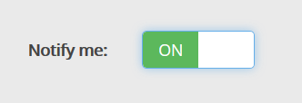
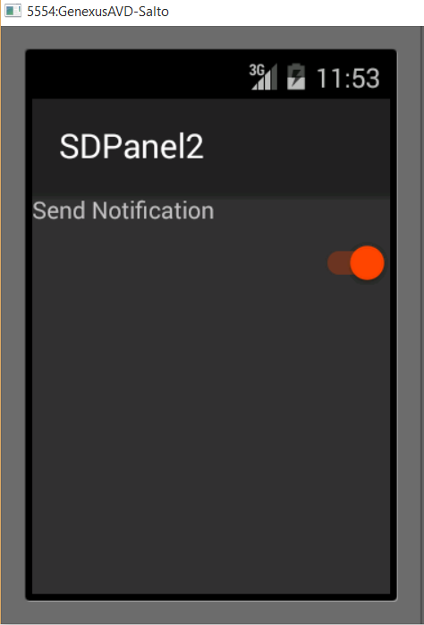
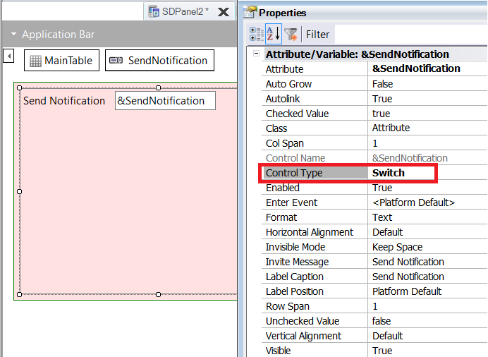
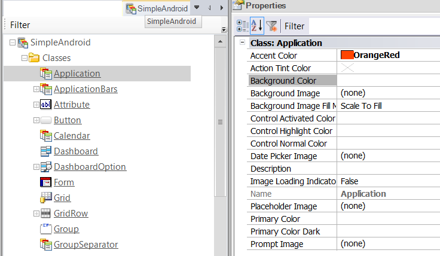
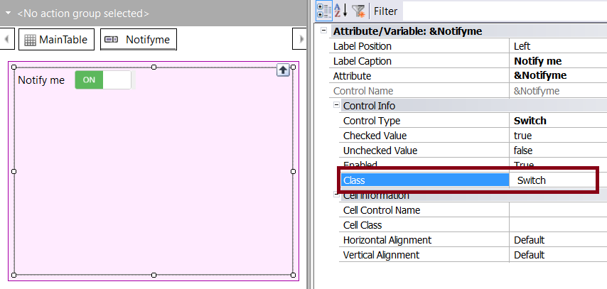
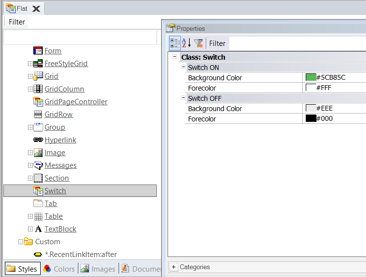

Switch Control (GeneXus 17 upgrade 4)
The Switch control is a possible value for the control type property for "two-state" variables or attributes. It's a toggle switch control that enables to select between two options, whether a certain condition or value is on or off.
It replaces the traditional check box, and it's valid for Smart Devices and Responsive Web Applications as well.
Web applications
Only the Abstract layout supports this control.


SD apps


How to change the aesthetics of the control
For SD apps, use the Accent Color property of the Application Class.

For WEB applications, check the Class property of the control and edit its properties on the Flat Theme:

Properties
| Name | Description |
| Auto Grow (SD only) | Auto Grow description |
| Checked Value | Indicates the "switch on" value |
| Unchecked Value | Indicates the "switch off" value |
| ON Text (Web only) | indicates the text it shows when the ON value is selected |
| OFF Text (Web only) | indicates the text it shows when the OFF value is selected |
Events
ControlValueChanged : It trigers when the value of the control changes.
Compatibility notes:
The ValueChanged event for the Switch control in IOS has been deprecated. The ControlValueChanged event should be used instead.